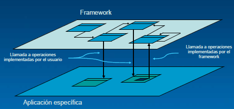
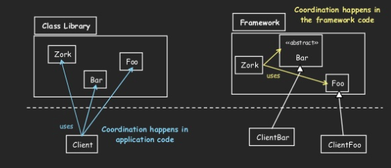

Frameworks Orientados a Objetos
Enrique Molinari
Reuso de Código...
Previo a la existencia de los frameworks, el mecanismo de reuso de código era el copy/paste y mejor aun, las librerías.
Sin embargo, las librerías son mas específicas, para problemas concretos.
Los frameworks nos brindan una mayor capacidad de reuso de código.
Reuso de Código...
Resulta que gracias a la herencia, el binding dinámico y el polimorfismo...
Es posible construir software incompleto o semi-acabado que se completa a travéz de la subclasificacion, la composición o el "descubrimiento" dinámico.
Un Framework OO...
Un conjunto de clases y sus colaboraciones que forman un Diseño Común y una Implementación incompleta de una solución genérica (reusable y extensible) dentro de un familia de aplicaciones.
Un Framework OO...
- ¿Familia de aplicaciones?: Aplicaciones Web, Sistemas de ventanas, Tésting Automatizado, Persitencia, etc.
- ¿Incompleto? Las "partes" a completar se ofrecen a travéz de la herencia, el binding dinámico y el descubrimiento. Llevan el nombre de puntos de extensión (o métodos hook).
Y... ¿Qué es un Framework Orientado a Objetos?
- Un conjunto de clases (mayormente abstractas).
- Más los hooks o puntos de extensión.
- La interacción definida entre las clases del framework y las especializaciones.
- Documentación de como uso y extiendo el framework.
Además...
- La extensión (customización) del framework se realiza implementando los puntos de extensión.
- El framework también puede proveer clases concretas como librerías.
Frameworks OO
Otra vista del código del framwork vs el código de la aplicación

Frameworks OO
Si implementamos una aplicación usando un framework tenemos:
- El código del framework, provisto por el desarrollador del framework.
- El código de la customización del framework, provisto por el desarrollador de la aplicación.
- El resto de la aplicación no relacionada con el framework, provista el desarrollador de la aplicación.
¿Qué distingue un Framework de una Librería?
En ambos tengo reuso de código...
Principalmente la Inversión de control

Puntos de Extensión
"Separa el código que cambia de aquel que no cambia"
Son las partes del framework donde un usuarios/desarrollador del framework puede modificar o agregar comportamiento.
Todo aquello cómun a las aplicaciones de una familia lo implementa el framework, las diferencias se implementan a travéz de los puntos de extensión.
Dos Tipos de Frameworks
Caja Blanca: Aquellos donde los puntos de extensión se basan en la herencia (Usando Template Method)
Caja Negra: Aquellos donde los puntos de extensión se basan en composición
Caja Gris: Puntos de extensión de ambas formas.
Framworks OO
Veamos un ejemplo en Eclipse...
Patrones vs Frameworks
Patrones
- Reutilización de diseño
- Indica cómo realizar un buen diseño.
- Independiente del lenguaje.
- Usualmente cubre un dominio general de problemas.
- Usualmente cubre una parte pequeña del diseño de una app.
Frameworks
- Reutilización de diseño y código.
- Es diseño e implementación.
- Especifico de un lenguaje.
- Usualmente cubre dominios específicos de problemas.
- Usualmente cubre todo el diseño general de una app.